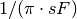
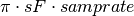
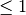
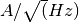

SIRENA Tools CLI¶
Here we describe the command line options for the tools run for SIRENA reconstruction (gennoisespec and tesreconstruction).
At the end, links to the documentation of other SIXTE tools required for the simulation of data files are provided (tesconstpileup and tessim).
gennoisespec¶
The goal of the gennoisespec tool is to calculate the current noise spectral density and the noise weight matrixes.
The input data from which it would be calculated should be a FITS file with the data splitted into records (see Noise file triggered into records of 10000 samples.) with or without photon events (pulses).
The user must supply the following input parameters:
-
--inFile=<str>¶ Name of the input FITS file (stream splitted into records)
Default: a.fits
-
--outFile=<str>¶ Name of the output FITS file with the current noise spectral density
Default: a_noisespec.fits
-
--intervalMinSamples=<samples>¶ Minimum length (in samples ) of a pulse-free interval to use
It will be redefined as the base-2 system value closest-lower than or equal than
intervalMinSamplesDefault: 1024
-
--nplPF=<real>¶ Number of pulse lengths after the end of the pulse to start the pulse-free interval searching (only relevant if pulse detection in the stream has to be performed)
Default: 0
-
--nintervals=<int>¶ Number of pulse-free intervals to use for the noise average
Default: 1000
-
--scaleFactor=<real>¶ Scale factor to apply to make possible a variable cut-off frequency of the low-pass filter. In fact, the cut-off frequency of the filter is  and therefore, the box-car length is  (see Low-Pass filtering).
If the
scaleFactormakes the box-car legnth  is equivalent to not filter (cut-off frequency of the low-pass filter is too high). If thescaleFactoris too large, the low-pass filter band is too narrow, and not only noise is rejected during the filtering, but also the signal.Default: 0
-
--samplesUp=<samples>¶ Consecutive samples that the signal must cross over the threshold to trigger a pulse detection (only relevant if pulse detection in the stream has to be performed)
Default: 2
-
--nSgms=<real>¶ Number of quiescent-signal standard deviations to establish the threshold through the kappa-clipping algorithm (only relevant if pulse detection in the stream has to be performed)
Default: 5
-
--pulse_length=<samples>¶ Pulse length in samples
Default: 1024
-
--LrsT=<secs>¶ Running sum (RS) length for the RS-filtering for raw energy estimation, in seconds
Default: 3.E-5
-
--LbT=<secs>¶ Baseline averaging length for the RS-filtering for raw energy estimation, in seconds
Default: 1.E-3
-
--weightMS=<yes|no>¶ Calculate and write the weight matrixes if yes
Default: no
-
--namelog=<str>¶ Output log file name
Default: noise_log.txt
-
--clobber=<yes|no>¶ Overwrite output files if they exist?
Default: no
-
--verbosity=<1|2|3>¶ Verbosity level of the output log file
Default: 3
At the current status, gennoisespec parameter structure is not integrated into the SIXTE parameter handling, so the tool input parameters are read by the C++ standard getopt_long module.
A typical command line run of this tool would be:
> gennoisespec --inFile=noise.fits --outFile=noiseSpec.fits --intervalMinSamples=pulseLength \
pulse_length=pulseLength --nintervals=1000
The output FITS file contains three HDUs, NOISE, NOISEALL and WEIGHTMS. The NOISE HDU contains three columns:
- FREQ: Noise positive frequencies in Hz
- CSD: Current noise spectral density. Amount of current per unit of frequency (spectral density) in 
- SIGMACSD: CSD Standard error of the mean in
The NOISE HDU contains two keywords:
- BASELINE: Noise baseline
- NOISESTD: Noise standard deviation
The NOISEALL HDU contains FREQ and CSD columns for positive and negative frequencies.
If --weightMS = yes, the WEIGHTMS HDU contains Wx columns. The lengths x will be base-2 values and will vary from the base-2 system value closest-lower than or equal-to the --intervalMinSamples decreasing until 2.
tesreconstruction¶
The tesreconstruction tool is a wrapper to perform the energy reconstruction of the photon events by means of two different implementations: Rcmethod=PP runs the preliminary branch developed by Philippe Peille and Rcmethod=SIRENA runs the SIRENA code in this documentation.
SIRENA code takes a FITS input file of data, optionally performs the detection of the events, then grades them and finally reconstructs their energy following the algorithm selected by the user in the input command line of tesreconstruction.
The input data should be a FITS file with the data splitted into records.
To run SIRENA implementation, the user must supply the following input parameters (see Event Energy Determination: methods for a detailed description in the context of the reconstruction methods to which they apply):
-
Rcmethod=<SIRENA>¶ SIRENA Reconstruction method
-
RecordFile=<str>¶ Input record FITS file
Default: record.fits
-
TesEventFile=<str>¶ Output event list FITS file
Default: events.fits
-
PulseLength=<samples>¶ Pulse length in samples
Default: 1024
-
EventListSize=<str>¶ Default size of the event list
Default: 100
-
LibraryFile=<str>¶ FITS file with calibration library
Default: library.fits
-
scaleFactor=<real>¶ Scale factor to apply to the fall time of the pulses to make possible a varying cut-off frequency of the low-pass filter (see Low-Pass filtering).
If this parameter is very small, this is equivalent to avoid filtering (cut-off frequency of the low-pass filter is too high). If the parameter is too large, the low-pass filter band is too narrow, and not only noise is rejected during the filtering, but also the signal.
Default: 0.0
-
samplesUp=<samples>¶ Number of consecutive samples up for threshold trespassing (only used in calibration run and in production run with A1 detection mode)
Default: 3
-
samplesDown=<samples>¶ Number of consecutive samples below the threshold to look for other pulse (only used in production run with A1 detection mode)
Default: 3
-
nSgms=<real>¶ Number of quiescent-signal standard deviations to establish the threshold through the kappa-clipping algorithm
Default: 5
-
LrsT=<secs>¶ Running sum (RS) length for the RS raw energy estimation, in seconds (only used in calibration run)
Default: 30E-6
-
LbT=<secs>¶ Baseline averaging length for the RS raw energy estimation, in seconds (only used in calibration run)
Default: 1.E-3
-
monoenergy=<eV>¶ Monochromatic energy of the pulses in the input FITS file in eV (only used in calibration run)
-
hduPRECALWN=<yes|no>¶ Add or not the PRECALWN HDU in the library file (only used in calibration run)
Default: no
-
hduPRCLOFWM=<yes|no>¶ Add or not the PRECLOFWM HDU in the library file (only used in calibration run)
Default: no
-
largeFilter=<samples>¶ Length of the longest fixed filter (only used in calibration run)
-
mode=<0|1>¶ Calibration run for library creation (0) or energy reconstruction run (1)
Default: 1
-
detectionMode=<AD | A1>¶ Adjusted Derivative (AD) or Alternative 1 (A1). Not used in library creation mode (
mode= 0)Default: AD
-
NoiseFile=<str>¶ Noise FITS file with noise spectrum
Default: noise.fits
-
FilterDomain=<T | F>¶ Filtering Domain: Time(T) or Frequency(F). Not used in library creation mode (
mode= 0)Default: F
-
FilterMethod=<F0 | B0>¶ Filtering Method: F0 (deleting the zero frequency bin) or B0 (deleting the baseline). Not used in library creation mode (
mode= 0)Default: F0
-
EnergyMethod=<OPTFILT | WEIGHT | WEIGHTN | I2R | I2RALL | I2RNOL | IRFITTED | PCA>¶ Event Energy Determination: methods Energy calculation Method: OPTFILT (Optimal filtering), WEIGHT (Covariance matrices), WEIGHTN (Covariance matrices, first order), I2R, I2RALL, I2RNOL and I2RFITTED (Linear Transformations), or PCA (Principal Component Analysis). Not used in library creation mode (
mode= 0)Default: OPTFILT
-
filtEeV=<eV>¶ Energy of the filters of the library to be used to calculate energy (only for OPTFILT, I2R, I2RALL, I2RNOL and I2RFITTED).
Default: 1000
-
OFNoise=<NSD | WEIGHTM>¶ It has only sense if
EnergyMethod= OPTFILT and it means to use the noise spectrum density (NSD) or the noise weight matrix (WEIGHTM).Default: NSD
-
LagsOrNot=<0|1>¶ Use LAGS == 1 or NOLAGS == 0 to indicate whether subsampling pulse arrival time is required. Currently only implemented for
EnergyMethod=OPTFILT.Default: 0
-
OFIter=<0|1>¶ Iterate == 1 or NOTIterate == 0 to look for the closest energy interval
Default: 1
-
OFLib=<yes|no>¶ Work with a library with optimal filters (OFLib=yes) or instead do Optimal Filter calculation on-the-fly (OFLib=no).
Default: no
-
OFStrategy=<FREE | BASE2 | BYGRADE | FIXED>¶ Optimal Filter length Strategy: FREE (no length restriction), BASE2 (length based on system 2 values) , BYGRADE (length according to event grading) or FIXED (fixed length). These last 3 options are only for checking and development purposes; a normal run with on-the-fly calculations will be done with
OFStrategy= FREE. Only used ifOFLib=no. Not used in library creation mode (mode= 0).Default: FREE
-
OFLength=<int>¶ Fixed Optimal Filter length (only if
OFStrategy= FIXED,mode= 1 andOFLib=no).Default: 512
-
intermediate=<0|1>¶ Write intermediate files: Y(1), N(0)?
Default: 0
-
detectFile=<str>¶ Intermediate detections FITS file (if
intermediate= 1)Default: detections.fits
-
filterFile=<str>¶ Intermediate filters FITS file (if
intermediate= 1)Default: filters.fits
-
tstartPulse1=<samples>¶ Start Time (in samples) of the first pulse in the record (0 if detection should be performed by the system; greater than 0 if provided by the user)
Default: 0
-
tstartPulse2=<samples>¶ Start Time (in samples) of the second pulse in the record (0 if detection should be performed by the system; greater than 0 if provided by the user)
Default: 0
-
tstartPulse3=<samples>¶ Start Time (in samples) of the third pulse in the record (0 if detection should be performed by the system; greater than 0 if provided by the user)
Default: 0
-
energyPCA1=<eV>¶ First energy (only for PCA)
Default: 500
-
energyPCA2=<eV>¶ Second energy (only for PCA)
Default: 1000
-
XMLFile=<str>¶ XML input FITS file with instrument definition
Default: xifu_pipeline.xml
-
clobber=<yes|no>¶ Overwrite output files if they exist?
Default: no
-
history=<yes|no>¶ Write program parameters into output FITS file?
Default: yes
The output file will also be a FITS file storing one event per row with the following information in the HDU named EVENTS:
- TIME: arrival time of the event
- SIGNAL: energy of the event in keV
- AVG4SD: average of the first 4 samples of the derivative of the pulse
- GRADE1: pulse duration (length of optimal filter applied, if that is the case)
- GRADE2: distance to the start time of the preceding pulse (in samples)
- PIX_ID: pixel number
- PH_ID: photon number identification for cross matching with the imapct list (currently not in use)
- GRADING: Pulse grade (HighRes=1, MidRes=2, LimRes=3, LowRes=4, Rejected=-1, Pileup=-2)
tessim¶
tessim documentation is accesible in http://www.sternwarte.uni-erlangen.de/research/sixte/ in the SIXTE Simulator Manual.